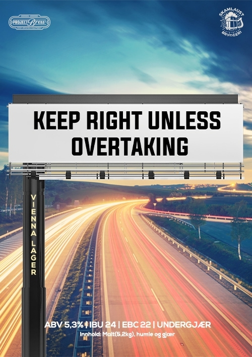

_ _ _______ _______ ________ .______ ____
__| || |_\ _ \ \ _ \ \_____ \ _____ ____ ____ ____ |__\ \ / /
\ __ / /_\ \/ /_\ \ _(__ < ______ \__ \ / \ / \_/ __ \| |\ Y /
| || |\ \_/ \ \_/ \/ \ /_____/ / __ \| | \ | \ ___/| | \ /
/_ ~~ _\\_____ /\_____ /______ / (____ /___| /___| /\___ >__| \___/
|_||_| \/ \/ \/ \/ \/ \/ \/

Project Brew - KEEP RIGHT UNLESS OVERTAKING
VIENNA LAGER - ALLGRAIN ØLSETT
Dette ølsettet er en perfekt balansert og crisp
Vienna Lager med nydelig maltsødme fra Vienna og
Munich-malten, og forsiktig humlet med Columbus
og Northern Brewer. En oppfordring til alle om å
holde til høyre på veien!
- - - - - - - - - - - - - - - - - - - - - - - - - - -
ABV: 5,0%
Antall flasker: 39
Bryggmester: Eirik
Bryggedag: 15.04.2021
Flaskedato: 29.04.2021
Drikkeklar: 13.05.2021